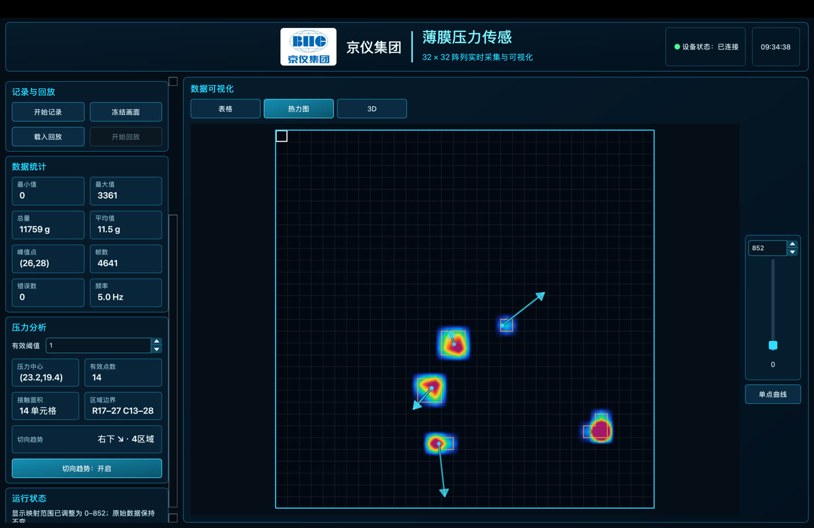
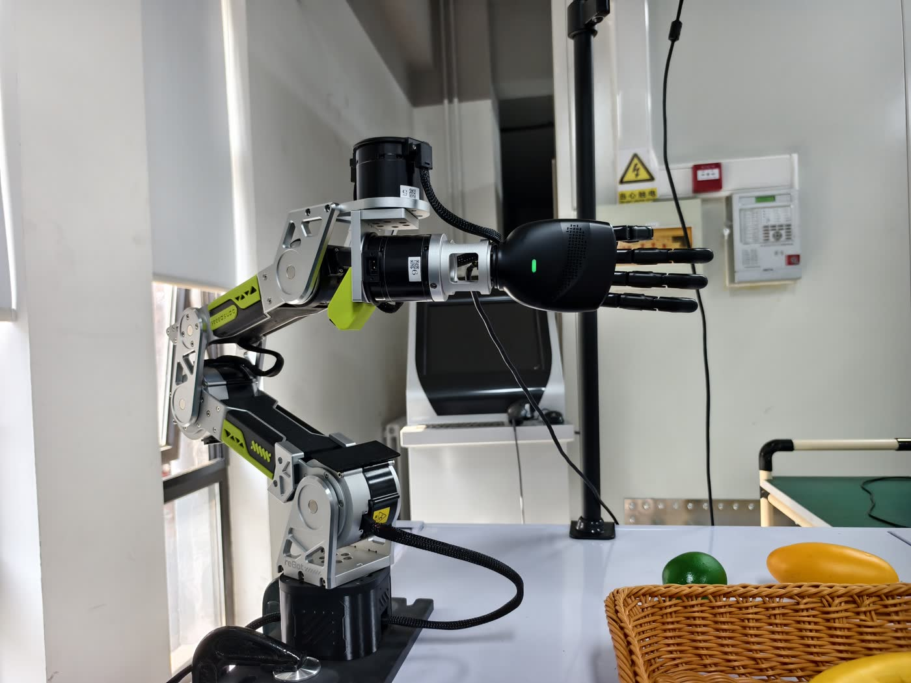

01 / TACTILE SENSING软件系统
触觉数据采集与信号分析
构建适配多尺寸压阻薄膜阵列的上位机，支持实时热力图、曲线、记录回放与 CSV 导出；开发接触区域匹配方法，在热力图上呈现局部切向移动趋势。
多硬件适配实时可视化切向趋势检测
从一枚触觉传感单元，
到一套能感知、决策、执行的机器人实验系统。
我关注机器人在真实物理交互中的“最后一厘米”：如何采集可靠的触觉信号，如何让视觉与触觉共同描述接触状态，又如何把这些信息反馈给灵巧手与机械臂。
阶段工作覆盖传感上位机、数据手套遥操作、具身智能实验平台、抓取原型与研究方案。每项工作都落在可运行的实验载体上，并为后续模型验证留下数据接口。
从数据入口到抓取验证，四项核心工作构成一条连续的技术链路。

构建适配多尺寸压阻薄膜阵列的上位机，支持实时热力图、曲线、记录回放与 CSV 导出；开发接触区域匹配方法，在热力图上呈现局部切向移动趋势。

使用 Vive Tracker 采集腕部 6DoF 位姿，以应变手套映射手部关节；通过坐标标定、滤波与阻尼最小二乘逆运动学，协同遥操作 B601 机械臂和 11 自由度灵巧手。

在 Ubuntu 24.04 与 ROS 2 Jazzy 环境中打通树莓派传感接入、Jetson 实机控制与推理、GPU 服务器模型训练，完成机械臂、灵巧手、深度相机和指尖触觉的集成。
将自然语言指令解析为抓取任务，结合深度相机与抓取姿态估计执行动作；利用指尖触觉信号确认接触，并在接触后停止持续增力，同时记录视觉、触觉和动作数据。
把传感、计算、模型和机器人执行接成同一条可调试的链路。
压阻阵列、指尖触觉与深度相机提供接触和场景信息。
ROS 2 节点与 LeRobot 录制连接传感、状态和动作数据。
服务器侧训练策略模型，Jetson 侧部署并开展实机验证。
机械臂和灵巧手完成抓取，指尖信号用于接触确认。
当前视触觉融合策略仍处于数据准备与实验设计阶段；滑移判断和动作修正需要进一步验证。
以下为阶段实验演示视频，点击标签切换。
在水果抓取场景中，系统结合视觉理解、抓取姿态估计与指尖接触信号，完成原型级实机演示。
除了系统原型，我也梳理视触融合、VLA 策略、手部姿态重建与世界模型等方向，形成无本体视触觉数据采集技术报告。下一阶段将从平台集成转向算法设计与可量化实验。
开展传感标定、重复性评估、接触状态识别与滑移风险判断。
对齐手腕位姿、手指关节、视觉与触觉时间戳，完善数据质量检查。
围绕危险实验场景的抓取、转运与旋盖，先开展安全受控的台架验证。
当前工作的核心成果是可复用的实验平台与原型链路。接下来将用统一指标检验触觉特征、接触判断与动作修正是否真正改善机器人操作。